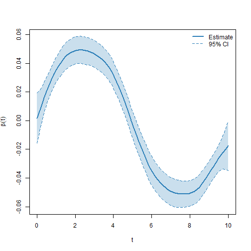

Model fitting for partially observed functional data
VDPO-03-pofd.RmdIntroduction
Partially observed functional data arise when each curve is recorded only on part of its domain, leaving one or more gaps. This is common when sensors fail for a period, when measurements are taken only while a condition holds, or when images are partially occluded. Discarding the incomplete curves or imputing the missing parts can bias the analysis, so it is preferable to work directly with the observed information.
The VDPO package implements a scalar-on-function
regression model for this setting. The functional covariate and the
functional coefficient are represented with B-spline bases, and the
model is estimated through the mixed model representation of penalized
splines, which also takes care of the smoothing parameters. The approach
is described in Hernandez-Amaro et al. (2025).
This vignette shows how to simulate partially observed data, fit the
model with po_fit, and inspect the estimated functional
coefficient together with its pointwise confidence intervals.
Data generation
The data_generator_po_1d function simulates a scalar
response together with a partially observed functional covariate. Its
main arguments control the number of curves (n), the number
of points in the common grid (grid_points), the response
distribution (response_type), the shape of the true
coefficient (linear_predictor) and the number of unobserved
segments per curve (n_missing).
set.seed(123)
sim <- data_generator_po_1d(n = 150, grid_points = 80)The returned list contains the observed curves in
noisy_curves_miss, with NA on the unobserved
part of each domain, the indices of the unobserved points in
missing_points, the common grid in grid, the
scalar response, and the true functional coefficient in
beta, which we will use to assess the estimate.
Model fitting
The functional covariate enters the model through the
ffpo constructor. Its arguments are the matrix of observed
curves (X), the list of unobserved indices
(missing_points), the common grid, and the
basis specification: nbasis gives the number of basis
functions for the curve representation and for the coefficient.
The model is fitted with po_fit, which uses the same
formula interface as the other model-fitting functions in the
package.
fit <- po_fit(
response ~ ffpo(X = sim$noisy_curves_miss, missing_points = sim$missing_points,
grid = sim$grid, nbasis = c(30, 30)),
data = list(response = sim$response, X = sim$noisy_curves_miss,
grid = sim$grid, missing_points = sim$missing_points)
)The fitted object is a list of class po_fit. It returns
the estimated functional coefficient (Beta), the intercept,
the basis coefficients (theta) and their covariance
(covar_theta), the observed-domain information
(M), and the evaluations of the functional term
(ffpo_evals).
str(fit, max.level = 1)
#> List of 7
#> $ fit :List of 15
#> ..- attr(*, "class")= chr "sop"
#> $ Beta :List of 1
#> $ intercept : num 0.105
#> $ theta : num [1:30, 1] -0.01223 0.00181 0.01579 0.02877 0.03864 ...
#> $ covar_theta: num [1:30, 1:30] 2.13e-04 1.20e-04 4.76e-05 6.97e-06 -8.03e-06 ...
#> $ M :List of 1
#> $ ffpo_evals :List of 1
#> - attr(*, "class")= chr "po_fit"
#> - attr(*, "N")= int 150Estimated coefficient
The element Beta holds, for each functional term, a data
frame with the grid (t), the estimated coefficient
(beta), its standard error (se) and the lower
and upper limits of the pointwise confidence interval
(lower and upper).
b <- fit$Beta[[1]]
head(b)
#> t beta se lower upper
#> 1 0.0000000 0.001797685 0.008967647 -0.015778581 0.01937395
#> 2 0.1265823 0.006577162 0.007498188 -0.008119017 0.02127334
#> 3 0.2531646 0.011312337 0.006318194 -0.001071096 0.02369577
#> 4 0.3797468 0.015964972 0.005450567 0.005282057 0.02664789
#> 5 0.5063291 0.020487481 0.004870483 0.010941509 0.03003345
#> 6 0.6329114 0.024802314 0.004556353 0.015872026 0.03373260The coefficient is displayed together with its confidence band.
plot(b$t, b$beta, type = "n", xlab = "t", ylab = expression(beta(t)),
ylim = range(c(b$lower, b$upper)))
polygon(c(b$t, rev(b$t)), c(b$lower, rev(b$upper)),
col = grDevices::adjustcolor("#2c7fb8", 0.25), border = NA)
lines(b$t, b$beta, col = "#2c7fb8", lwd = 2)
lines(b$t, b$lower, col = "#2c7fb8", lty = 2)
lines(b$t, b$upper, col = "#2c7fb8", lty = 2)
legend("topright", legend = c("Estimate", "95% CI"),
col = "#2c7fb8", lty = c(1, 2), lwd = c(2, 1), bty = "n")
Because the data are simulated, the estimate can be compared with the true coefficient. The correlation between the two is high, which confirms that the shape of the coefficient is recovered well.
The two-dimensional case
When the functional observations are surfaces that are partially
observed, the same workflow applies through the analogous functions
data_generator_po_2d, ffpo_2d and
po_2d_fit. The fitted object has the same structure, with
the estimated coefficient returned as a surface.
References
Hernandez-Amaro et al. (2025). A new scalar on function generalized additive model for partially observed functional data. doi:10.48550/arXiv.2510.26917.